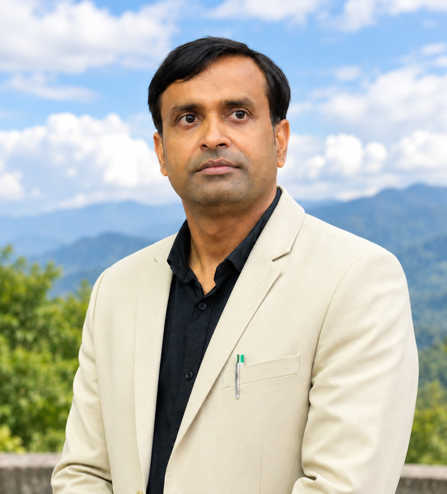

Assistant Professor · Dept. of Library & Information Science, Mizoram University
My research spans multilingual information retrieval, intelligent library systems, research mapping, and AI-driven scholarly analysis, with a focus on making scholarly knowledge more accessible, discoverable, and meaningful. I have independently developed research tools for abstract content analysis and citation prediction, full-scale bibliometric, and topic modeling analysis, supporting automated text mining, research mapping, visualization, and evidence-based analysis of scholarly literature.

Current research
Scientometrics, AI, and the future of library systems
I completed my Ph.D. at Banaras Hindu University on biotechnology research patterns across the BRICS nations, and since then I've extended that scientometric lens to fields ranging from public health to AI governance, while also working directly on the systems side — multilingual retrieval, digital repositories, and applying topic modeling and NLP to library and research-support questions.
Scientometrics & bibliometrics
Mapping research trends, authorship and collaboration patterns, and citation dynamics across scientific fields, from biotechnology to AI policy.
AI & digital libraries
Applying topic modeling, text mining, and sentiment analysis to library systems, research support services, and scholarly discovery.
Knowledge organization
Multilingual and indigenous information access, library automation, and content management for academic and public libraries.
- Information Retrieval Systems
- Library Automation & Management
- Digital Library & Content Management
- Topic Modeling, Text Mining & Sentiment Analysis
- Knowledge Organization & Management
- Application of AI in Libraries
Highlights
Recent recognition
Best Paper Award — ICAL 2025
"Evolution of Research Themes in LIS in India: A Topic Modeling and Bibliometric Approach," 8th International Conference of Asian Libraries, Gautam Buddha University, April 2025.
Assistant Professor (Level 11)
Department of Library and Information Science, Mizoram University, Aizawl — current position since May 2021.
Principal Investigator, funded research project
"Community Practices for Knowledge Transfer through the Generations among the Lushai Tribe of Mizoram" — Mizoram University-funded, completed.